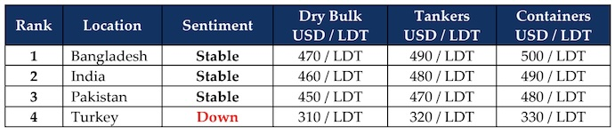

inWeekly Demolition Reports23/12/2024

As the world stands teetering on the edge of completing another circle around our sun, economies worldwide continue to struggle amidst a greater prevailing unease. On the back of a strengthening U.S. economy that saw the U.S. Feds cut another 0.25% in interest rates this week, the U.S. Dollar continued to make the present, a testy time for most ship recycling nations as respective currencies continue to either not trade (on account of a lack of available domestic reserves) or continue to lose ground against a firming Dollar. Stresses around U.S. oil production that spiked the barrel price on account of fears that Hurricane Rafael in the U.S. Gulf would disrupt production. Notwithstanding, the far less fearful outcome has helped maintain current levels of output, easing at USD 70.38/barrel by the end of the week. Domestic disappointment over China’s recent stimulus measures to help easing local government debt strains failed to garner the desired outcome, seeing growing concerns from Chinese businesses and easing of Chinese import of oil. Even the Baltic’s main sea freight index eased its losing streak, rising about 1.4% by the time the week ended. Yet, the seeming supply of tonnage has maintained itself through the course of the week as sub-continent ship recyclers have certainly had their share of (still slim) pickings to negotiate on at the bidding tables.
And although a slightly disappointing local port position earmarks the end of Week 51, it still remains a more encouraging end to the year that has left recycling markets in an overall more bullish mood heading into Q1 2025 – seeking to negotiate on and absorb the incoming flow of tonnage of some seriously aged beauties. Moreover, despite prices cooling from the peaks over USD 600/LDT down to USD 450s/LDT over the last 11 months alone, after weeks of abstaining from the lower levels, both ship owners and cash buyers are finally comfortable / willing to offer vessels back into the market at these now acceptable lower numbers being tabled. While 2025 is gearing up to be a big year from a safe / green recycling regulation stand point, as the Hong Kong Convention is finally set to enter into force and ship recycling yards at all of the major ship recycling destinations will need to be compliant and operate in line with the guidelines of the convention, in order to continue taking in the vast array of vessels that will eventually come available for a recycling sale. India has a majority (if not all) of its ship recycling yards already HKC compliant, and Bangladeshi recyclers are still recovering through their economic meltdown and trying to work towards having most of their yards compliant by June 2025. Pakistan, however, lags far behind with not even a single yard HKC compliant, amidst desperate calls for the upgrade process to now start, in order not to be left too far behind the plate. Finally, Turkey at the far end continues suffering through its fundamentals collapse for over 3 years now.
Overall, as elections will likely come to an end by Q1 2025 in Bangladesh as well, with some stark shifts in regime and power playing out this year, in the USA as well with President Trump winning another 4 years and PM Modi regaining a majority in India in November, the future is certainly a cautionary tale. As supply is expected to gain momentum once the ongoing sanctions are in place and businesses adapt to the post-sanction world once the fallout is known, 2025 may end up being a comparatively resurgent year to 2024, if not besting it.
For Week 51 of 2024, GMS Market Rankings / vessel indications are as below.

📄 Download PDF: Ship-recycling-market-insight-Week-51-12-13-2024-Change-Ahead.pdfSource: GMS,Inc.https://www.gmsinc.net/gms_new/index.php/web